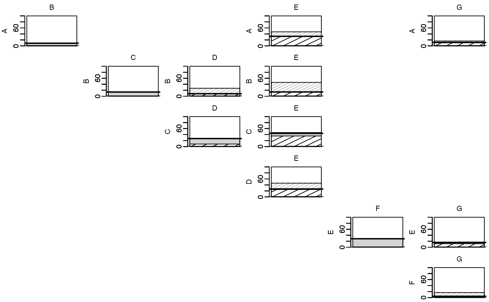
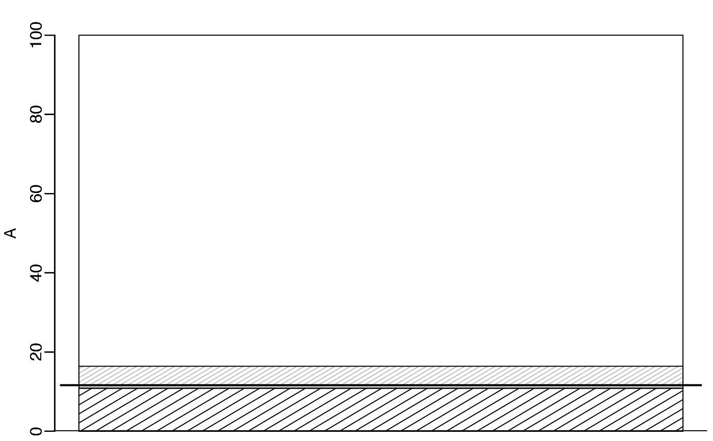
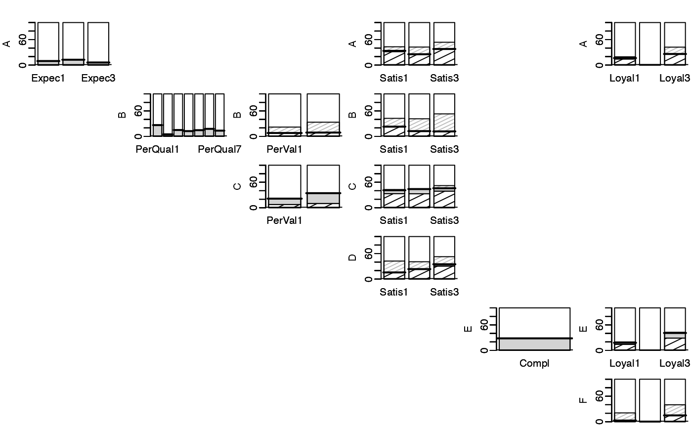

Decomposes effects between blocks in a multiblock system into total effects, unique effects, common contributions, and additional effects. Supports both SO-PLS (Sequential Orthogonalised PLS) and ordinary least squares (OLS) approaches with cross-validation or fitted values.
Usage
path_effects(
relations,
blocks,
validation,
segments,
SO = TRUE,
fits = FALSE,
boot = 0,
ncomp = NULL,
transitive_closure = FALSE,
...
)Arguments
- relations
A matrix defining the path structure. Rows specify relationships between blocks, with 2 columns:
c(from_block_index, to_block_index).- blocks
A multiblock data frame or list of named matrices containing the block data.
- validation
Validation method passed to
pls::plsr(). Common options:"CV"for cross-validation, "LOO" for leave-one-out validation, or"none"for fitted values.- segments
Number of segments for cross-validation. Default is 5.
- SO
Logical. If
TRUE(default), use SO-PLS; ifFALSE, use OLS.- fits
Logical. If
TRUE, use fitted values instead of cross-validation. Default isFALSE.- boot
Number of bootstrap samples for computing standard errors. Default is 0 (no bootstrapping).
- ncomp
Optional component settings per predictor block. Supply either:
a vector with length equal to the number of predictor blocks (
unique(relations[,1])), in ascending predictor-block order, ora full-length vector with one entry per block (non-predictors may be
0). Positive integers set upper limits; negative integers force exact component counts. All predictor entries must be non-zero and have the same sign.
- transitive_closure
Logical. If
TRUE, automatically add transitive closure to the relations. Default isFALSE.- ...
Additional arguments passed to underlying fitting functions.
Value
An object of class path_effects, which is a matrix with the following
components for each path:
Tot: Total effectUn: Unique effectCo: Common contributionAd: Additional effect
Attributes include:
scaled: Scaled contribution matrixindividual: Individual-level contributionsboot: Bootstrap replicates (ifboot > 0)
Examples
# Analysis of the mobile dataset
data(mobile)
# Define path structure (A->B, A->E, A->G, B->C, B->D, B->E, C->D, D->E,
# D->E, E->F, E->G, F->G)
paths <- matrix(c(1,2, 1,5, 1,7, 2,3, 2,4, 2,5, 3,4, 3,5, # Add 0,2, for A->C
4,5, 5,6, 5,7, 6,7),
ncol=2, byrow=TRUE)
# Compute path effects with cross-validation using SO-PLS
pem <- path_effects(paths, mobile, validation="CV", segments=5,
segment.type="consecutive")
# Print results
print(pem)
#> B C D E F G
#> Tot A 8.99 x x 31.93 x 11.63
#> Un A 8.99 x x 0.58 x 0.78
#> Co A x x x 31.35 x 10.84
#> Ad A x x x 15.03 x 4.78
#> Tot B 14.09 8.41 14.24 x x
#> Un B 14.09 0.00 0.00 x x
#> Co B x 8.41 14.24 x x
#> Ad B x 18.27 31.97 x x
#> Tot C 26.75 44.13 x x
#> Un C 18.27 8.82 x x
#> Co C 8.49 35.31 x x
#> Ad C 0.00 2.49 x x
#> Tot D 26.41 x x
#> Un D 1.59 x x
#> Co D 24.83 x x
#> Ad D 19.38 x x
#> Tot E 28.35 16.00
#> Un E 28.35 4.10
#> Co E x 11.90
#> Ad E x 0.98
#> Tot F 4.33
#> Un F 0.02
#> Co F 4.31
#> Ad F 12.44
# Plot all results
plot(pem)

# Print and plot single path
print(pem, "A","G")
#> G
#> Tot A 11.63
#> Un A 0.78
#> Co A 10.84
#> Ad A 4.78
plot(pem, from = "A", to = "G")

# Print and plot results per variable
print(pem, individual = TRUE)
#> Expec1 Expec2 Expec3 PerQual1 PerQual2 PerQual3 PerQual4 PerQual5
#> Tot A 9.49 12.56 6.11 x x x x x
#> Un A 9.49 12.56 6.11 x x x x x
#> Co A x x x x x x x x
#> Ad A x x x x x x x x
#> Tot B 26.59 4.91 15.00 12.46 14.67
#> Un B 26.59 4.91 15.00 12.46 14.67
#> Co B x x x x x
#> Ad B x x x x x
#> Tot C
#> Un C
#> Co C
#> Ad C
#> Tot D
#> Un D
#> Co D
#> Ad D
#> Tot E
#> Un E
#> Co E
#> Ad E
#> Tot F
#> Un F
#> Co F
#> Ad F
#> PerQual6 PerQual7 PerVal1 PerVal2 Satis1 Satis2 Satis3 Compl Loyal1
#> Tot A x x x x 33.41 25.48 37.79 x 16.47
#> Un A x x x x 1.76 0.00 0.68 x 2.28
#> Co A x x x x 31.65 25.48 37.11 x 14.19
#> Ad A x x x x 9.61 16.87 15.86 x 3.02
#> Tot B 17.76 13.54 7.98 9.01 22.93 12.41 11.79 x x
#> Un B 17.76 13.54 0.00 0.00 0.00 0.00 0.00 x x
#> Co B x x 7.98 9.01 22.93 12.41 11.79 x x
#> Ad B x x 13.93 24.37 19.54 29.02 41.18 x x
#> Tot C 21.41 34.26 41.13 43.90 45.86 x x
#> Un C 13.93 24.37 8.07 11.07 6.89 x x
#> Co C 7.49 9.89 33.05 32.83 38.97 x x
#> Ad C 0.00 0.00 1.67 0.00 6.17 x x
#> Tot D 15.59 23.45 34.83 x x
#> Un D 0.00 0.34 4.32 x x
#> Co D 15.59 23.11 30.51 x x
#> Ad D 26.75 17.31 17.82 x x
#> Tot E 28.35 17.90
#> Un E 28.35 3.86
#> Co E x 14.04
#> Ad E x 2.03
#> Tot F 2.80
#> Un F 0.00
#> Co F 2.80
#> Ad F 17.97
#> Loyal2 Loyal3
#> Tot A 0.00 26.06
#> Un A 0.00 0.62
#> Co A 0.00 25.45
#> Ad A 0.00 16.08
#> Tot B x x
#> Un B x x
#> Co B x x
#> Ad B x x
#> Tot C x x
#> Un C x x
#> Co C x x
#> Ad C x x
#> Tot D x x
#> Un D x x
#> Co D x x
#> Ad D x x
#> Tot E 0.00 40.99
#> Un E 0.00 12.11
#> Co E 0.00 28.89
#> Ad E 0.00 1.57
#> Tot F 0.00 14.91
#> Un F 0.06 0.23
#> Co F -0.06 14.68
#> Ad F 0.00 24.91
plot(pem, individual = TRUE)

# Analysis of the NIR-Raman-PUFA data (emulsions)
data(emulsions)
# Standardise response
emulsions$PUFA <- scale(emulsions$PUFA)
# Define path structure (NIR->Raman, NIR->PUFA, Raman->PUFA)
paths_NRP <- matrix(c(1,2,1,3,2,3), ncol = 2, byrow = TRUE)
if (FALSE) # Too time consuming
# Compute path effects with cross-validation using SO-PLS
pem_NRP <- path_effects(paths_NRP, emulsions, validation="CV",
segments = 5, segment.type="consecutive",
ncomp=c(16,15))
# Print results
print(pem_NRP)
#> Error: object 'pem_NRP' not found
# Plot all results
plot(pem_NRP)
#> Error: object 'pem_NRP' not found
# \dontrun{}
# Reversed order of NIR and Raman (uncomment to run)
# paths_RNP <- matrix(c(2,1,2,3,1,3), ncol = 2, byrow = TRUE)
# pem_RNP <- path_effects(paths_RNP, emulsions, validation="CV",
# segments = 5, segment.type="consecutive", ncomp=c(16,15))
# print(pem_RNP)